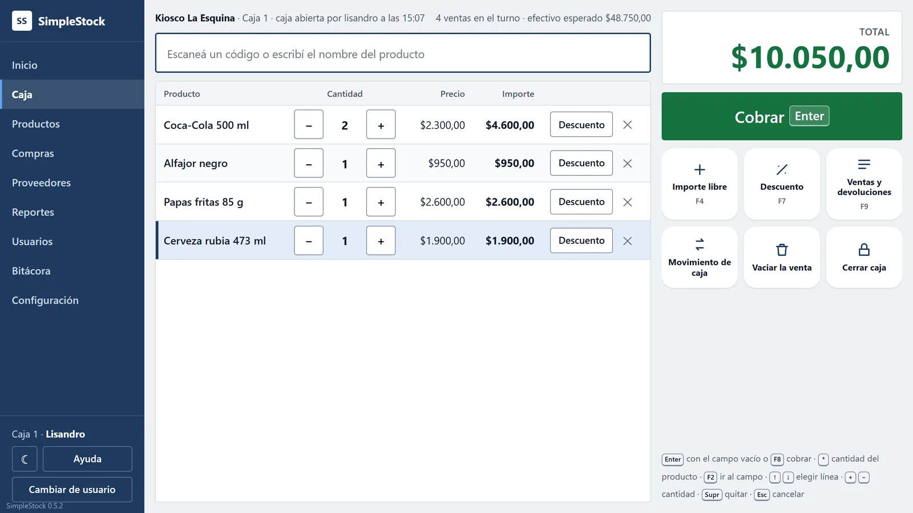

En desarrollo · v0.5
SimpleStock
Sistema de caja y stock para kioscos y almacenes, pensado como producto comercial: se instala en la PC del comercio y se usa desde el navegador, también desde otras cajas de la red local. Lo diseñé y lo dirijo yo, usando IA como herramienta de implementación. Decisiones de diseño: dinero en centavos enteros, importes calculados siempre en el servidor, ventas idempotentes, nada se edita ni se borra y auditoría con hash encadenado. Backend en capas con una prueba que vigila las dependencias, más de 900 pruebas automatizadas y un kiosco piloto real. Código privado, disponible para mostrar en entrevista.
- Java
- Spring Boot
- SQLite
- React
- TypeScript